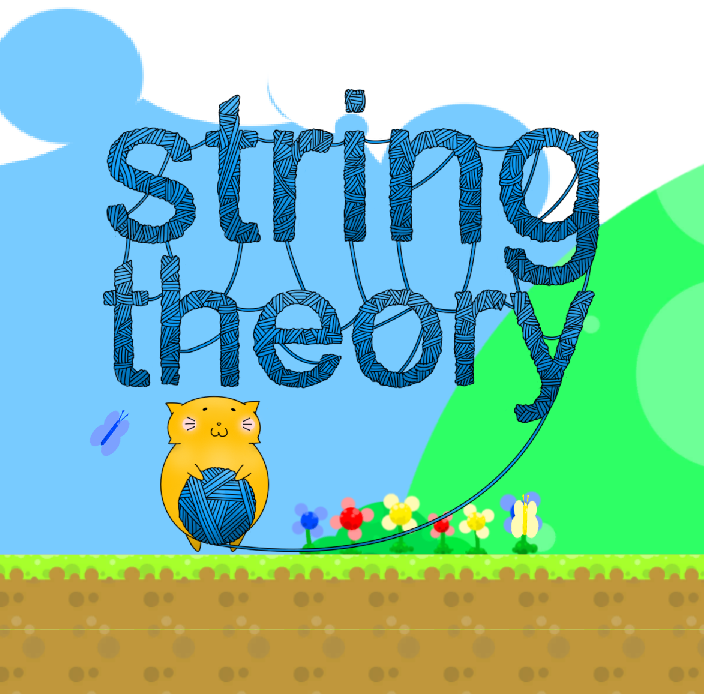
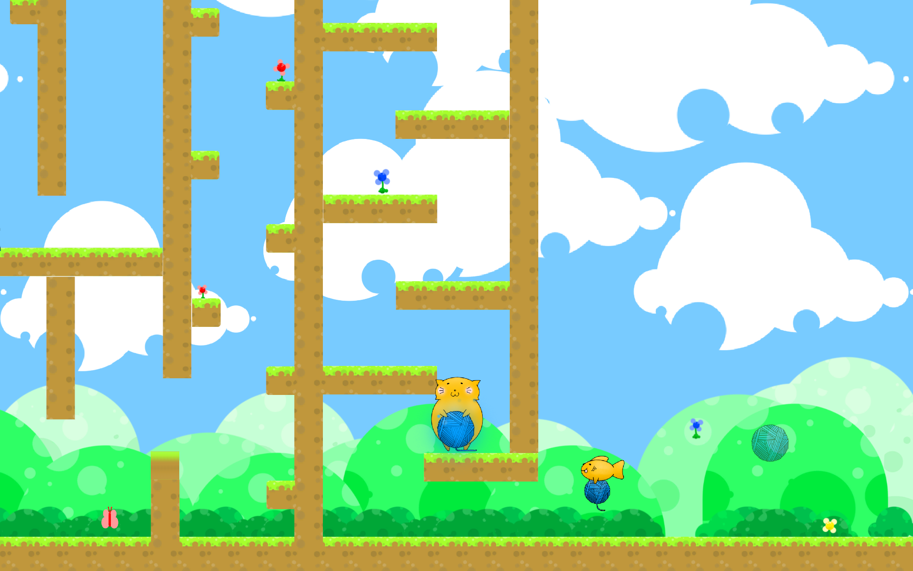
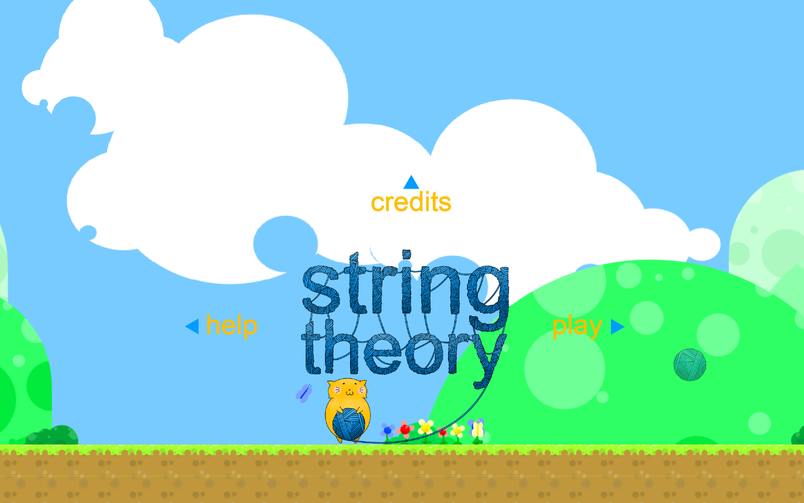
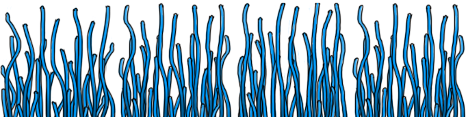

A Game Jam Game
String Theory is a 2D Puzzle Platformer.
Wang is just an ordinary fish. And George is a cat whose hunger knows no bounds! Help George satisfy his cravings by guiding him to Wang. He may be a little too chubby to move around, but that's why he always carries around his teleporting yarn! Watch out for tentacle traps though, as they may might just fancy your yarn as a snack.
I worked on String Theory as a Programmer in a team of 7 people during a game jamCreating games in a short span of time, usually between 1 and 3 days..
Download (Windows): StringTheory.zip (18.6MB)
Project Folder (Google Drive): String Theory
Personal Growth
- Unity Programming
- Game Jam
- Teamwork

Team Members
- Eric Ngo (Producer)
- Shane Yamamoto (Program)
- Jonathan Stevens (Program)
- Wesley Wu (Program)
- John English (Design)
- Ben Everett (Design)
- Max Chung (Artist)
- James Copeland (Sound)
About
By this time, I had been around UCI's Video Game Development Club (VGDC) for about 3 months. At the time, I had become well known within the club as the person who showed that sound design was possible in a collegiate game-making club. I even went so far as to finally create and lead an audio department for the club (it didn't exist before). I think that, for that reason, a lot of people were surprised when I desided to work as a programmer instead.
I chose to work as a programmer since I was studying in the field of CSComputer Science after all. I felt that making music, even though it was a strong passion of mine, wouldn't get me very far, in academics and career. Also since it was my first time being introduced to the idea of a game jamCreating games in a short span of time, usually between 1 and 3 days., I thought 'why not try out something new?'. Since game jams are a less-serious work, I figured could get some learning in without hindering my teammates.
For this game jam, since most of us were beginners at working on this kind of project, we opted to use Google DriveA place to store your files online, visible to others in a group instead of a more formal repository such as Git. I'm very satisfied with my overall experience from this event. All of our team members had an opportunity to chip in their ideas. We didn't have to scrap any of the ideas; they all fit in really nicely.
The theme of this jam was teleportation. We started drawing out our ideas. Somebody –– I don't remember who exactly –– mentioned cats, and so we sort of just stuck with it. Then out of nowhere, Max made an unforseeable correlation: yarn balls - string theory - teleportation - cats. And that became the basis of our project. A cat that teleports by using a yarn ball.

Not going to lie, I started off this project knowing nothing about UnityA game engine and development tool. In fact, I didn't even know that such a program even existed until the day before our game jam. Thankfully though, Shane and Jonathan had a solid understanding of Unity, so they were able to show me the ropes. I left the core gameplay programming to them, and worked on the little tidbits, such as the title screen and various UI elements.

I do have some lingering regrets about the programming. We didn't really take time in the beginning to plan out how we spend the next two days. A lot of necessary programming elements ended up being pushed to the end of our production, leaving little room for testing. We still got the job done, although we ran out of time to include over half of our level designs.
Everybody did a really great job. Even through our poor planning and lack of experience, we somehow ended up placing 3rd in the game jam, out of around 10 games. We really liked the overall design and wished we could polish the game into an actual product. But due to everybody else having outside work and yearlong projects, we ultimately decided to discontinue its development. We were actually approached by somebody completely unrelated to the project who wanted to work on the game with us, but we already knew we didn't want to continue working on String Theory, so that's a shame.

After what was a pretty good experience working with random people, I went back to working on our yearlong project, SLicense to Dye